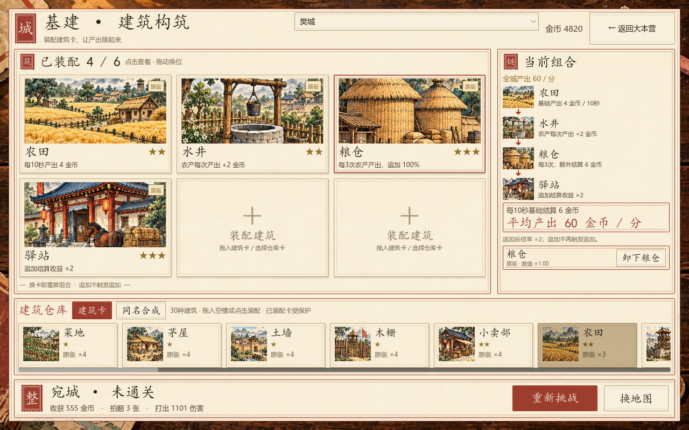

<!doctype html>
<html lang="zh-CN">
<meta charset="utf-8"><meta name="viewport" content="width=device-width,initial-scale=1">
<title>拍案三国 · 基建与构筑美术精修</title>
<style>
*{box-sizing:border-box}body{margin:0;color:#2b211a;background:#302118;font:16px/1.8 "Microsoft YaHei",sans-serif}main{max-width:1460px;margin:auto;padding:26px;background:#f7efd9 url('../../assets/art_v7/paper.png') center/cover fixed;min-height:100vh}header{display:flex;gap:24px;align-items:center;justify-content:space-between;border-bottom:2px solid #9d3d2e;padding-bottom:16px}h1{font:42px KaiTi,serif;margin:0}p{margin:6px 0;color:#74654f}a{color:#9d3d2e}nav{display:flex;flex-wrap:wrap;gap:8px;margin:18px 0}button{border:1px solid #9d3d2e;background:#f8f0dc;color:#9d3d2e;padding:9px 17px;font:inherit;cursor:pointer}button[aria-selected=true]{color:#f8f0dc;background:#9d3d2e}figure{margin:0}img{display:block;width:100%;height:auto;border:1px solid #b8a078;box-shadow:0 8px 25px #4c2e1822}figcaption{padding:12px 0}footer{border-top:1px solid #b8a078;margin-top:15px;padding-top:10px;font-size:14px}@media(max-width:760px){main{padding:14px}header{display:block}h1{font-size:32px}button{padding:7px 11px}}
</style>
<main><header><div><h1>基建 · 构筑美术精修</h1><p>大幅印刷卡面、淡山水旧纸、朱印题签与清晰组合连线。</p></div><div><p>2026-10-07 · v1.7 实机</p><a href="实施说明.md">实施与验证</a> · <a href="../../assets/art_v7/generation.json">完整生图提示词</a><br><a href="../art-v5/index.html">此前参考与实机</a></div></header>
<nav aria-label="实机与生成插画"></nav>
<figure><figcaption id="caption"></figcaption></figure>
<footer><p>30种建筑与6名核心连招武将的新卡面由内置ImageGen生成；名称、星级、规则、金币和按钮由游戏实时绘制。素材已接入Godot，并保留旧图。</p><p>六槽装配、同名合成、卡组选择/搜索/装备/派兵，以及通关或失败后的整备与继续入口保留。图中素材卡为独立展示存档。</p></footer></main>
<script>
const items=[
['基建实机','base.png','完整场景建筑卡、金色星级与品相角签。右侧小图及朱箭头展示实际组合，底部仓库与战果入口。'],
['构筑实机','deck.png','大幅上阵将牌、新肖像、所选能力、纸牌仓库和头像连招图。构筑插图在首屏可见。'],
['同名合成','fusion.png','同名同品相三合一，带材料与下一品相说明；装配卡受保护。'],
['基建720高度','base-720.png','1280×720实际渲染，卡面、仓库、卸下和战后继续入口保持可见。'],
['构筑720高度','deck-720.png','1280×720实际渲染，主要能力和操作按钮优先显示，仓库与组合可滚动。'],
['建筑卡面Ⅰ','../../assets/art_v7/buildings_a.png','12幅建筑场景，依次B01—B12：菜地、茅屋、土墙、木栅、小卖部、农田、木哨塔、水井、铁匠铺、校场、粮仓、驿站。'],
['建筑卡面Ⅱ','../../assets/art_v7/buildings_b.png','12幅建筑场景，依次B13—B24。'],
['建筑卡面Ⅲ','../../assets/art_v7/buildings_c.png','6幅功能建筑场景，依次B25—B30。'],
['六将新肖像','../../assets/art_v7/heroes.png','依次朱灵、文聘、韩玄、程普、周仓、马良，用于现有三类连招。'],
['构筑新插画','../../assets/art_v7/deck_scene.png','朱红牌盒、印刷将牌、兵牌与兵书，右侧山水留白。'],
['山水纸纹','../../assets/art_v7/paper.png','淡墨山水和暖色纸纤维，支持清楚阅读界面文字。']
];
const nav=document.querySelector('nav'),img=document.querySelector('#shot'),caption=document.querySelector('#caption');
items.forEach((p,i)=>{const b=document.createElement('button');b.textContent=p[0];b.setAttribute('aria-selected',String(i===0));b.onclick=()=>{nav.querySelectorAll('button').forEach(x=>x.setAttribute('aria-selected','false'));b.setAttribute('aria-selected','true');img.src=p[1];img.alt=p[2];caption.textContent=p[2];};nav.append(b);});caption.textContent=items[0][2];
</script></html>
